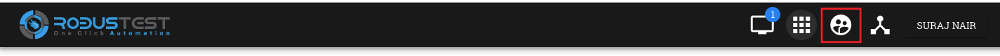

17. Admin Console¶
Users who have Admin access on the RobusTest platform will find an extra icon on the platform header to access the same
The Admin Console enables you:-
- to perform administrative tasks on RobusTest.
- to monitor and capture important and useful info on usage of the platform
Let’s have a look at each section of the Admin Console:
1. Activity
This section captures all user activity with respect to device groups. These include:
- creation of a device group
- modification of a device group * addition/removal of devices in a group * addition/removal of projects in a group
- deletion of a device group
2. Project
This section provides details of all active and inactive projects on RobusTest
On selecting a project by clicking on it, the following additional information pertaining to that project are available:
- Sessions - The last 100 test sessions that were opened on the project are visible. For each test session the following info are displayed:
- Type of test session (Manual, Automation, Run, Hub)
- Device used in the test session
- Name of user who created the test session
- Start and End time of test session
- Duration of the test session
- Reason for termination of test session (Appropriate messages are displayed for normal and abnormal termination of a test session)
- Usage - This tab provides the breakup of the total duration of each type of test session (Manual, Automation, Run & Hub) that was created in this project
- Builds - This tab displays details of each build that was added to the project
- Members - This tab provides:
- details of all memebers within a project
- privileges available for each member
- a means to add/remove members
- a means to grant/revoke admin rights
- Devices - This tab provides a list of devices that have been reserved for the project
- Settings - In this tab, you can do the following:-
- Activate or Deactivate a project - You can do so by enabling/disabling the checkbox
- Making the project a Universal Project - When a project is designated as a universal project, any new user who signs up onto the RobusTest platform gets access to the Universal project
3. User
This section provides details of all active and inactive users on RobusTest
On selecting a user by clicking on their name, the following additional information pertaining to that user are available:
- Sessions - Details of the last 100 test sessions that were started by the user are visible.
- Usage - This tab provides the breakup of the total duration spent on each type of test session by the user
- Projects - This section provides a list of all projects that the user is a part of
- Settings - This section enables you to:-
- Activate/Deactivate a user on RobusTest
- Grant/Revoke admin privileges for a user on RobusTest
4. Model
This section provides details of all active and inactive mobile device models being used on RobusTest.
A device model is a combination of the Model name (e.g. Mi A2, Samsung Galaxy S7, iPhone 7, etc.) and the Android/iOS version
On selecting a model name, the following additional information pertaining to that device model are available:
- Devices - This provides a list of all devices on RobusTest that have the same model and OS version running on them
- Settings - Under this section, you can:
- provide various information pertaining to the model such as Model name, Model brand, Model manufacturer, CPU, RAM, Screen Ratio, Screen Size, Resolution, etc.
- enable the device navigation bar/menu to be displayed in the device screen. This is menu where you would have buttons such as Back, Home, History, ec
- make available for automation all devices belonging to the mmodel by enabling the ‘Support Automation’ checkbox. If this check box is not selected, the all devices that fall under the model category will only be available for Manual testing
5. Device
This section provides details of all devices available on RobusTest. You can view a list of devices that are connected, disconected or in a busy (in-use) state.
Android and iOS devices can be visually differentiated by the logo displayed on the left of the device name. The logo also helps determine the state of the device by the colour in which the logo is displayed
- Green colour - the device is connected and available for use
- Red colour - the device is in use
- Grey colour - the device is disconnected
- Blue colour - the device is in the state of being added to RobusTest. This is seen under the following circumstances: * when a device is being added for the first time * when an existing device is being restarted * when the RobusTest server to which the device is connected to is being restarted
On selecting a device by clicking on its name, the following information are visible:
- device name
- OS version running on the device
- device model
- device ID
- ADB ID
- device IMEI number
- Node server name and IP to which the device is connected
- date and time when device was last used
You can also perform the following actions using the buttons displayed on the top right:
- Free device - This button is visible only if the device is in use in a test session. Clicking on it, releases the device from its current test session and makes it available for a new test session
- Restart device - This button can be used to restart a connected device remotely
- Flash Screen - On clicking on this button, a red screen appears on the device for a few seconds and then goes away. This button can be used for identifying a specific device when there are multiple devices of the same make and model. It can help with proper labelling of devices for later identification
On selecting a device, a few more tabs become visble. These tabs provide the following additional information pertaining to that device:
- Sessions - Details of the last 100 test sessions that were started on the device are visible.
- Usage - This tab provides the breakup of the total duration of each type of test session in which the device was used
- Apps - This tab provides a list of apps that have been pre-installed on the device
- History - This tab provides the history of the connection and disconnection events of the device with the RobusTest server along with the date & time of these events as well as the reason for the same
- Contact - Any contact provided here will receive notification emails in the event of the device getting disconnected from the RobusTest server. To add a contact to a device, first create a contact in the ‘Contacts’ section of the Admin Consle. Once the contact has been added in the ‘Contacts’ section, you can add the same to the device from the current tab
- Shell - You can run adb commands on the device from here
- Settings - This section enables you to:
- provide a name for the device
- opt in or out of receiving a device disconnection email
- provide a mobile number associated with the device
- add device tags to identify the device
- identify the device groups to which the device belongs, if any
- identify the contacts associated with the device
6. Group
A group or a device group is a means by which you can restrict the usage of specific devices to specific projects.
In other words, it is a binding between one or more devices and one or more projects.
Devices that are part of a group can only be accessed by members of the projects that are part of the same group. These devices will NOT be available for members of other projects which are not part of the group.
This functionality comes in handy when there are mutiple teams accessing the same device cloud and each team has their own set of devices on the cloud. Grouping your devices helps you ensure that the devices that you need for testing your projects are always available to your team.
7. Session
This section displays details of the last 100 test sessions created by all users on RobusTest. It also displays the count of test sessions that are in progress at that moment of time.
8. Node
This section provides details of all nodes available on RobusTest.
Each node is basically a RobusTest server to which devices are connected. The RobusTest device cloud is made up of a number of interconnected nodes or servers with devices attached to one or more of them.
On selecting a node by clicking on its name, the following information are visible:
- node name
- node IP
- date & time the node was last updated
- date & time till which the node will function (this is usually in sync with the RobusTest license period)
You can also perform the following actions using the buttons displayed on the top right:
- Flash Screen - On clicking on this button, a red screen appears for a few seconds on each device conected to the server/node and then goes away. This button can be used for identifying all Android devices connected to that node.
- Create Snapshot - Clicking on this button captures details of all devices that are successfully connected to the server at that point in time. These details are now visible on the ‘Snapshot’ tab for each node. This can be used for comparison at a later point of time to identify the devices that are no longer seen connected to the server.
- Delete Node - This button is to delete a node entry under the Node section for a node that is no longer valid.
On selecting a node, a few more tabs become visble. These tabs provide the following additional information pertaining to that node:
- Devices - This provides a list and details of all devices that are connected to the RobusTest node
- History - This tab provides the history of the connection and disconnection events of the RobusTest server along with the date & time of these events as well as the reason for the same.
- Snapshot - Clicking on the ‘Create Snapshot’ button captures details of all devices that are successfully connected to the server at that point in time. This can be used for comparison at a later point of time to identify the devices that are no longer seen connected to the server
- Contact - Any contact provided here will receive notification emails in the event of the node getting disconnected (i.e, the machine is either switched off or is unreachable). To add a contact to a node, first create a contact in the ‘Contacts’ section of the Admin Consle. Once the contact has been added in the ‘Contacts’ section, you can add the same to the node from the current tab.
- Settings - This section enables you to update the following information about the node:
- Node Name
- Node Location
- Node Mac Address
- Node Machine Serial
9. Integrations
RobusTest enables you to integrate with any API enabled CI tool like JIRA, Asana, etc.
In order to integrate with such tools, you first need to create a configuration in the ‘Integrations’ section of the Admin Console.
To integrate with a tool:
- click on the ‘Create New Integration’ button
- select a tool from the drop down provided. A list of fields that enable integration with the tool are now displayed
- enter relevant values for the fields displayed and click on the ‘Create Coinfiguration’ button
E.g., let’s say you need to integrate with JIRA to log bugs encountered while testing your app. You need to do the following: * select JIRA from the tool drop down list * provide information such as the JIRA Server URL, JIRA username, JIRA API Token, etc. * create the configuration setting * now, on the Project Dashboad go to the ‘Settings’ tab and select the name of the configuration you created on the ‘Bug Tracker’ dropdown
In case you do not find the CI tool of your choice on the tool drop down list, please reach out to the RobusTest support team by emailing us at support@robustest.com and our team shall get back to you for further assistance with integration
10. Contact
This section enables you to add contact details about one or more persons. These are folks who should be informed in the event of a device or node disconection.
Once you have created contacts, you can add these to the contact list on the Device and Node sections of the Admin console so that they recieve notification emails.
11. Settings
This section enables you to configure different kinds of values on the RobusTest platform:
- Notification
In this section, you can decide if a notification email should be sent out for the following events:
- Device Connections
- Device Disconnections
- Node Connections
- Node Disconnections
- Network Shaping
Under Contruction